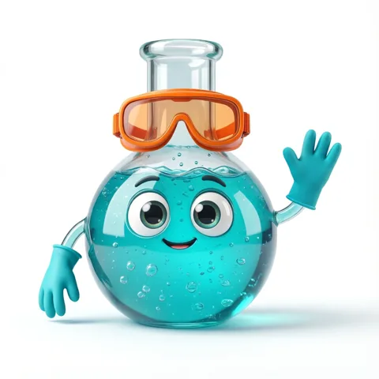
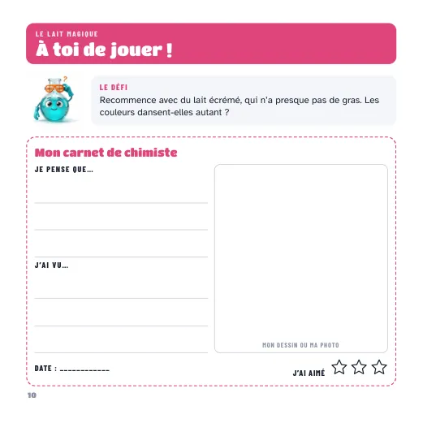

Bonus du livre
Le guide du p'tit chimiste

Salut, c'est Bulle ! Voici les pages à imprimer pour refaire tes expériences autant de fois que tu veux.
- 10 carnets de chimiste : le défi de chaque expérience, et la place pour noter ce que tu penses et ce que tu vois.
- Le diplôme du p'tit chimiste, à remplir quand tu as fait les 10 expériences.

Pour les parents : impression en A4, en couleur ou en noir et blanc. Ces pages sont réservées à un usage à la maison ou en classe, pas à la revente.
Voir tous nos livres